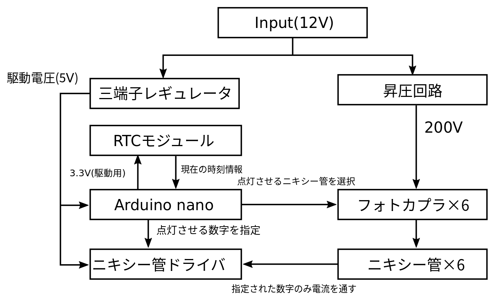

本ページの内容
タイトルの通りニキシー管で時計を作ってみました．実はニキシー管自体は２年くらい前に買っていたんですが，ずっと放置してて今年になってやっと作りました笑
プリント基板の設計をしたので見た目もそれなりになりました．設計ミスって再発注したい気分です．しかし，お金がかかるので妥協してます．過去の自分を殴りたいですね...
また，制作の過程をところどころ省いていますがご容赦ください．
使用したもの
ハード
- ニキシー管✕6
- Arduino nano
- RTC(Real Time Clock)モジュール
- フォトカプラ(TLP627)
- ニキシー管ドライバ
- 三端子レギュレータ(12V→5V)
- 抵抗とかコンデンサ類
- 昇圧回路(市販品を使いました)
- DCジャックの端子(メス)
ソフト，サービス
- kicad
- Seeed Studio(ここでプリント基板を発注しました)
ニキシー管とは
ざっくり言うと，一昔前の製品に用いられていた数字を表示するパーツです．正直僕も実物はそんなに見たことないです.高電圧をかけないと点灯しないため，利便性などの観点から今は７セグLEDなどに取って代わられた感じがします．シュタインズゲートのダイバージェンスメーターに用いられていることで有名になった気がしますね．
ニキシー管ってどこで買うの？
基本的にはインターネットで海外から取り寄せる場合が多く，amazonやebayなどで購入できます．日本語以外にも英語で"nixie tube"で検索をかけると出てきます．また，もう生産されていないものがほとんどなので基本的には中古品しかありません．
手軽に購入できるのはだいたいロシア製のもの(型番がIN-○○のやつ)ですが，種類があるので自分の好きなものを買いましょう．僕はIN-14とIN-16で迷いましたがIN-14の5の表示が気に食わなかったのでIN-16にしました．
回路について
そこまで細かく解説はしませんが，12Vの入力に対して三端子レギュレータを用いてニキシー管ドライバやarduinoの駆動用電圧5Vの部分と昇圧回路を用いて200V以上に昇圧してニキシー管を駆動させる部分に分けます． そして，ニキシー管(200V)の制御をフォトカプラを介してマイコン(arduino nano)で行うことで時刻を表示します．パーツを少なくするためにダイナミック点灯をやってみました．

また，プリント基板を設計する前にきちんとニキシー管がつくかブレットボードなどで試作したほうがいいです．回路が間違っていたらお金の無駄になるので...
後ろのほうでkicadで書いた回路図も載せてるので気になる方はそちらを参照してください．(見やすいかどうかは怪しいですが)
昇圧回路
昇圧回路はaitendoさんの昇圧回路のキットが安かったので使用しました．可変抵抗で昇圧率を変更できます．
http://www.aitendo.com/product/6872プリント基板を作る
kicadの他にもEAGLEなどもありますがサイズ制限がないなどの理由からkicadを選びました．以下参考にしたページです．
回路図
プリント基板の設計は素人なのであまり参考にならないかもしれませんが...
自動配線を使いましょう
部品の配置を決めたあと，先程の回路図のデータをexportしてfreeroutingというツールを用いることで自動配線することができます．また，配置する部品のデータがないものは自分で寸法を測って設計する必要があります．(ニキシー管，DCジャック，Arduinoなど)
また，実物と等倍で印刷することができるので，寸法があってるか確認しましょう．(僕はなぜか等倍で設定しても若干小さく印刷されて確認できませんでしたが．ubuntu環境だと同じ症状が起きるかもしれません．)
Seeedで基板を発注
最初はelecrowで発注しようとしたんですが，なぜかアカウント作成ページが封鎖されてて発注できなかったのでseeedにしました．
kicadで出力したガーバーデータを用いてseeedで発注します．必要なガーバーデータの出力方法はseeedのサイトに書いてあります．
KiCADからガーバーファイルを出力する方法後はサイトの流れに従って材質や層数，寸法などを指定して発注すればおしまいです(※最小単位でも5枚からの発注になります)．届くまで時間がかかりますがその間にRTCモジュールの時刻設定やarduinoのプログラムを作っておきましょう．(今回は省略します)
届いたらハンダ付けして完成！
これで完成！！って思ったら上から見ると右上のとこおかしくない？？
2箇所穴があるんですが，設計ミスで使えませんでした．原因ですが，1つ目は四隅の足用のものでDCジャックが干渉して入りませんでした...2つ目は下の段につけてある昇圧回路とスペーサーでつなぐ部分なのですが穴の位置をまちがえてました．3つの穴で支える予定だったのですが，今は2つで支えているので強度が不安です．余計な荷重をかけなければ問題なさそうですが，見た目がちょっとあれですね...
ちなみに他にもDCジャックの穴を左右反転に作ってたりもしたんですが，そちらは使わない3つめのピンを折ることで解決しました．
かかった費用
昔に買ったパーツなどもあるので，アバウトですが．
- ニキシー管：1000円×6
- 昇圧回路：700円
- arduino nano(互換品)：300円
- プリント基板：3500円
- その他もろもろ：2000円
- 合計：12500円
最後に
設計ミスはあったものの，一応動くということで初めてプリント基板を設計したにしては上出来だったのかもしれません(回路自体を間違えていたら再発注しないといけないですからね...)．あとは，タクトスイッチでモードを切替えたりして機能を追加できるようにすればよかったなと思いました．
残りの基板4枚どうしようかな...知り合いで欲しい方いたら差し上げるのでご連絡ください．
以上！